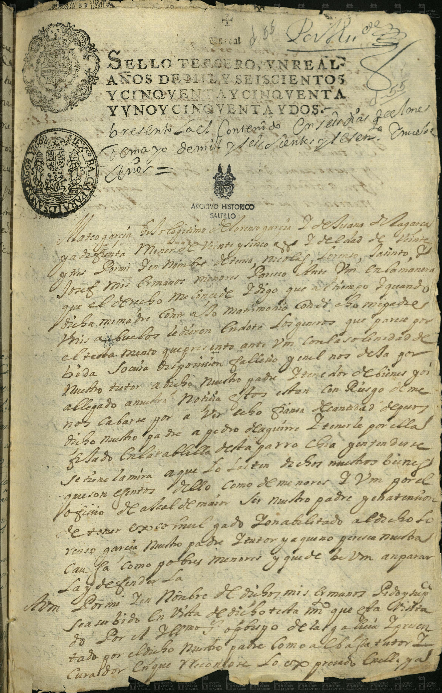
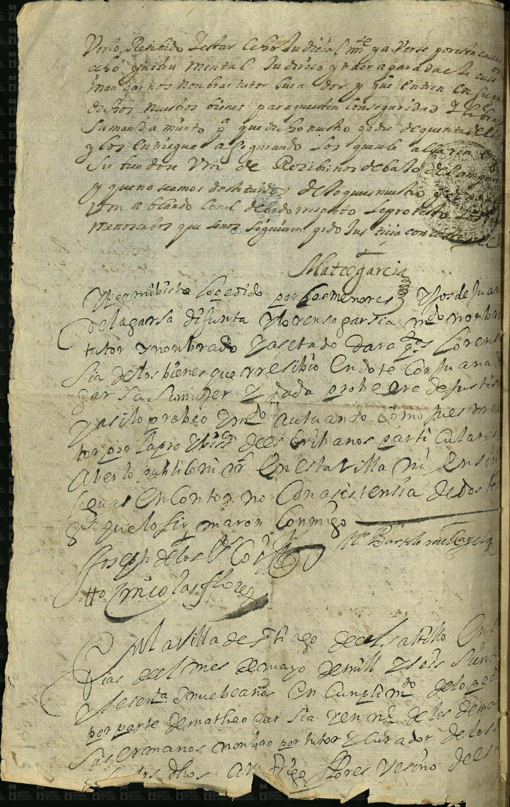

Mateo García, hijo de Lorenzo García y Juana de la Garza


| Fondo | Presidencia Municipal (PM) |
| Firma AMS | AMS, PM, c 2, e 49, d 55, 1 f |
| Fecha | 6 de mayo de 1669 (según la ficha del catálogo; en el manuscrito se lee «… de mayo de mill y seiscientos y sesenta y [duda: nueve] años») |
| Descripción de la ficha del catálogo (tal cual) | Mateo García hijo de Lorenzo García, por sí ya a nombre de sus hermanos menores, pide no se les embarguen los bienes que les dejó su madre Juana de la Garza. |
| Id de ficha en el portal | 48580 |
| Personas indexadas en la ficha | Mateo García, Lorenzo García, Juana de la Garza |
Lectura paleográfica parcial. Lo que no se lee con certeza está marcado [ilegible] o [duda: …] y no se toma como dato.
Imagen 1 (anverso). Papel sellado impreso: «SELLO TERCERO, UN REAL, AÑOS DE MIL Y SEISCIENTOS Y CINQUENTA Y [UNO] Y CINQUENTA Y DOS» (leyenda impresa; lectura [duda]); sello de habilitación [duda: 1668 y 1669].
Encabezado manuscrito: «Presento el contenido … [ilegible] … de mayo de mill y seiscientos y sesenta y [duda: nueve] años.»
«Matheo García, hijo legítimo de Lorenzo García y de Juana de [la] Garza, difunta, menor de veinte y cinco años y de edad de veinte y [ilegible], y por mí y en nombre de [duda: T…], Nicolás, Lorenzo, [duda: Juan…] y Joseph, mis hermanos menores, parezco ante vm en la manera que el derecho me concede, y digo que al tiempo y cuando dicha mi madre contrajo su matrimonio con el dicho mi padre, mis abuelos le dieron en dote los géneros que parece por el testamento que presento ante vm …» [duda: «… con la solemnidad de …»]
«… falleció y en él nos dexó por nuestro tutor al dicho nuestro padre y tenedor de bienes, y ha llegado a mi noticia estos están con riesgo de [ilegible] por haber hecho fianza de cantidad de [ilegible] el dicho nuestro padre a Pedro [duda: Aguirre] …» [ilegible: dos renglones]
«… se tiene la mira, a que lo faltan de dos nuestros bienes que son exentos dello como de menores, y vm por el oficio de alcalde mayor …» [duda] «… ser nuestro padre … Lorenzo García nuestro padre y tutor, y a quien no parece nuestra causa como pobres menores, y que debe vm amparar la ley y defenderla …»
«… por mí y en nombre de dichos mis hermanos pido y suplico sea servido en vista de dicho testamento …» [ilegible] «… presentado por el dicho nuestro padre como tal tutor y curador …» (continúa en la imagen 2)
Imagen 2.
«… y de ser recibido [duda: testigo judicial] … y a verse por estar … ocho(?) … mandamiento judicial … y de rem[ate] … nos nombrar tutor curador y que entren consigo dichos nuestros bienes para que estén con seguridad … su mandamiento … que dicho nuestro padre dé cuenta de ellos y los entregue asegurando los que le alcanzaren …» [duda en varias palabras]
«… sirviéndose vm de recibirnos debajo de su amparo y que no seamos despojados de lo que es nuestro … vm a blando [duda] … debido respeto … lo protesto … menores no sabemos que se nos siguiere …»
Firma: «Mateo García» (rúbrica).
«Por admitida la petición y recibido por los menores hijos de Juana de la Garza, difunta, Lorenzo García mi nombrado tutor …» [duda] «… y nombrado [duda: secretario] … de dar cuenta de los bienes que recibió en dote con su Juana de la Garza su mujer y [ilegible] … probeo en autos como pidieron … por la parte … pidió … en esta villa … en consistencia de dos testigos … que lo firmaron conmigo.»
Firmas: [duda: «Bartolomé Ro…»]; [duda: «Joseph de los Co…»]; «Nicolás Flores» [duda en apellido].
«En la villa de Santiago del Saltillo, en [ilegible] días del mes de mayo de mill y seiscientos y sesenta y [duda: nueve] años, en cumplimiento de lo pedido por parte de Matheo García en nombre de los demás sus hermanos, nombro por tutor y curador de los dichos a [duda: Diego] Flores, vecino de [esta villa] …» (el documento se corta en el borde inferior, rasgado)
Imagen y ficha: Archivo Municipal de Saltillo, Sefarad MX. Fuente: Archivo Municipal de Saltillo, portal del archivo digital (Presidencia Municipal). Verificado y avalado por Sefarad MX · genealogiasefardi.site.